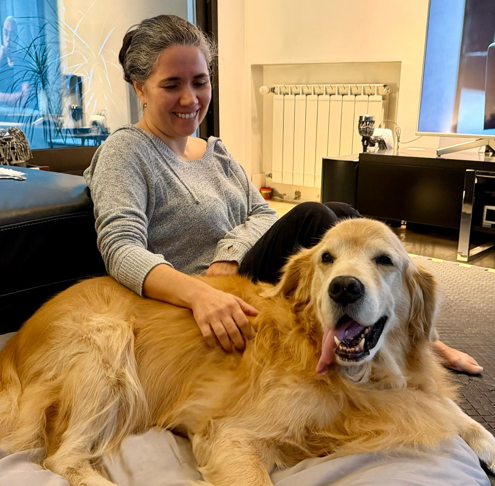
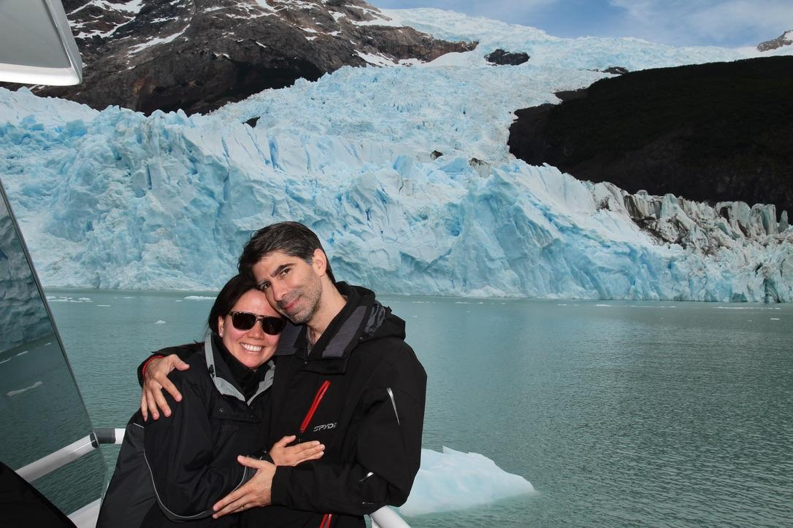
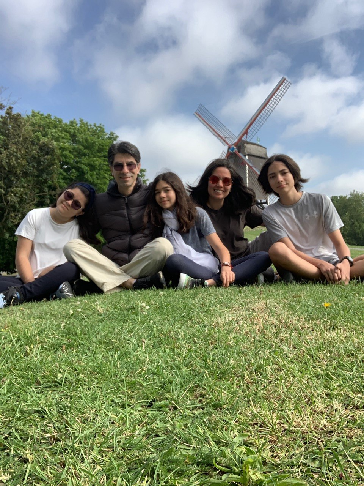
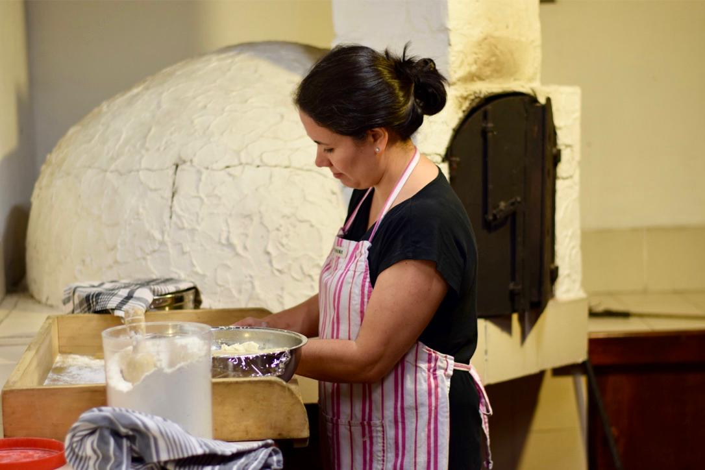
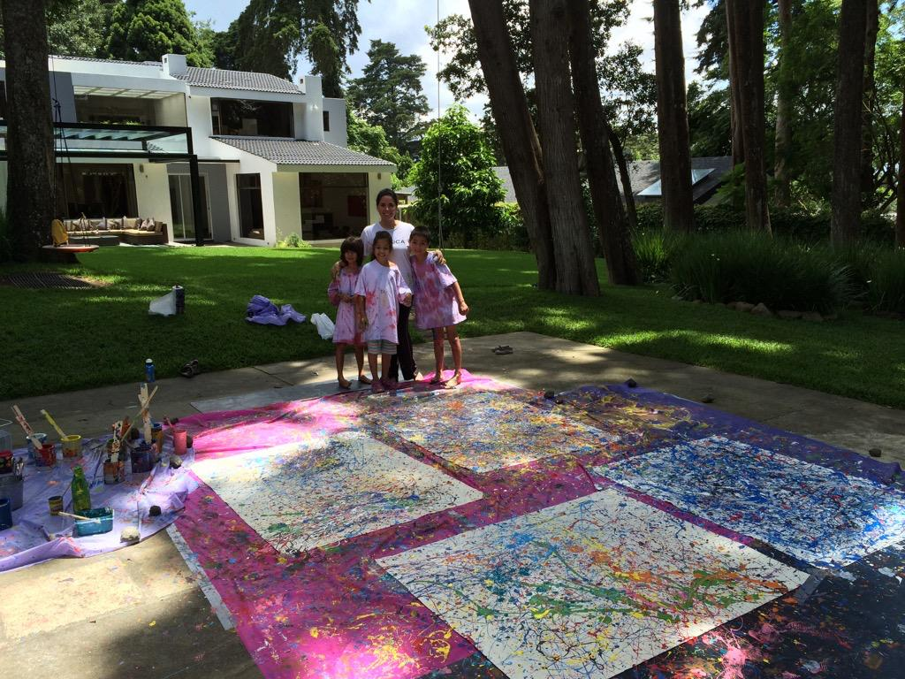
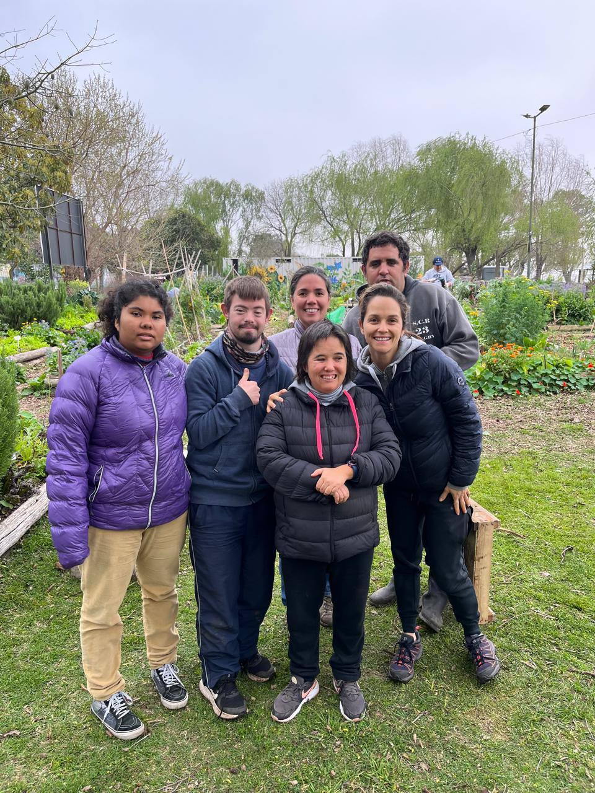

Rojo corazón — una vida de arte, familia y camino compartido.

Rossana Fabbrizio
Artista, joyera, cocinera, voluntaria, mamá de tres, compañera de vida. El 23 de junio celebra sus 50 primaveras. Esta página es un homenaje a ella: a sus manos, a su fuerza, a su forma de transformar cada lugar en casa.
Un recorrido por el mundo, siempre con raíces, arte y familia.
Desde 1999, seis países, y siempre tomados de la mano.

Desde La Paz hasta un glaciar en Patagonia. Desde una boda en Guatemala hasta una nueva vida en Europa. Donde sea que estén, están juntos.
Noviembre de 1999 fue solo el primer capítulo. Más de 26 años después, siguen escribiendo la historia.
El mayor tesoro de Rossana.

Todo lo que hace con sus manos y su corazón.

Amasando pizza en el horno de leña de la casa familiar en Guatemala. La cocina es su lenguaje de amor.

Pintura, cerámica, joyería, tejido. Todo lo que puede crear con sus manos, lo crea con belleza.

Trabaja en una huerta con jóvenes con necesidades especiales. Su generosidad se nota en lo que hace.
Una canción para tus 50
Rojo corazón, 50 primaveras
Artista de la vida, tejedora de sueños
Rojo corazón, cocinas con amor
La huerta, el barro, el pincel — todo lo haces mejor
Letra de Jorge, con amor
Un poema en sus 50.
Rossana Hija, esposa, madre, emprendedora, generosa, perseverante, valiente y verdadera. Genuina. Aventurera. De un país a otro, de una ciudad a la siguiente, fue haciendo del viaje su forma de vida. Hoy, a los cincuenta, lleva un continente en la memoria y otro entero por andar. Hermana menor de tres, aprendió temprano que la vida se comparte y que el amor se honra en el gesto y en el arte. Emprendedora con las manos y con el alma: joyera, ceramista, pintora, todo lo que toca lo transforma y lo mejora. Generosa sin anunciarse, creando espacios donde otros pueden crecer, una huerta, una palabra, un lugar para creer. Perseverante cuando la vida exigió de más, valiente cuando era fácil detenerse, cuando muchos habrían elegido no moverse. Cariñosa en lo esencial, genuina siempre, sin disfraces ni poses, con la verdad sencilla de las almas nobles. Madre de tres: Alejo, Rita, Natalia, su centro, su alegría, su familia. Compañera de camino, construyendo juntos una vida, en lo cotidiano y lo extraordinario, en todo lo que la vida les pone enfrente. Hija de quienes ya no están, pero siguen cerca, presentes, en su taller en Guatemala, en la memoria y en la mente. Cincuenta años siendo fiel a sí misma, sin pedir permiso, sin bajar la mirada, sin renunciar a lo que ama, a lo que la llama. Eso es Rossana.— Jorge, 23 de junio de 2026
Gracias por 50 años de luz, de arte, de amor.
Esto recién empieza: vamos por más 50.
❤️